Mes Projets
Voici mes différents projets. Ils ont été principalement réalisés lors de mes études.
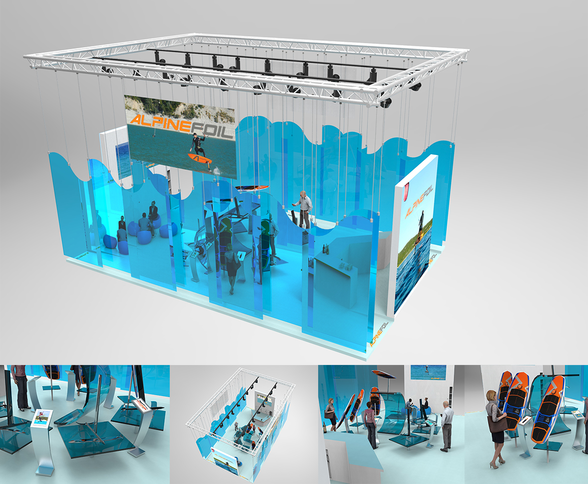
Stand pour la marque Alpine Foil
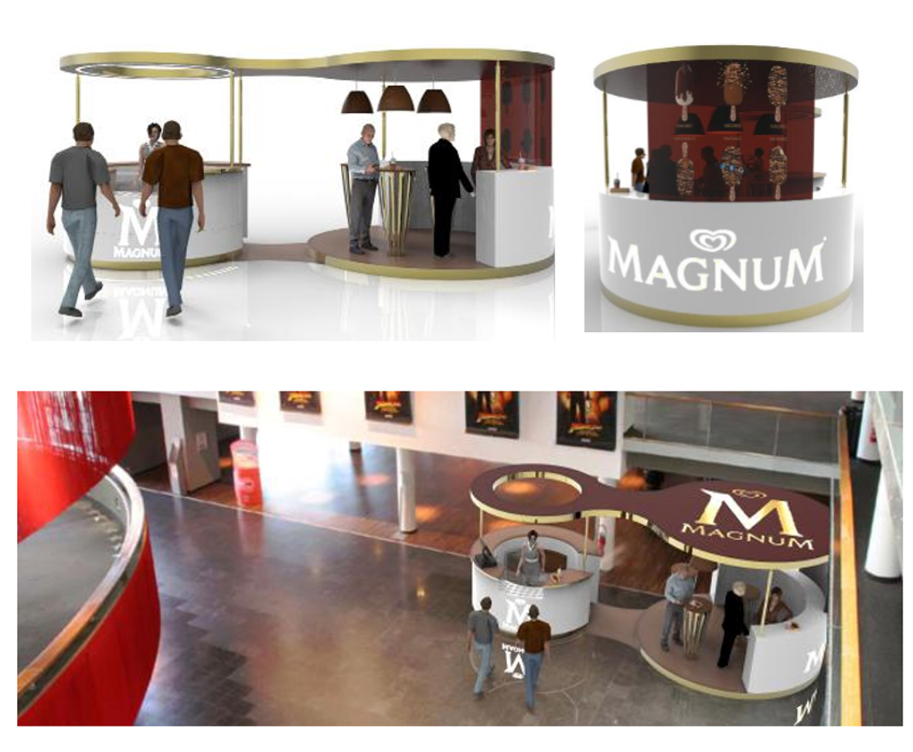
Réalisation d'un corner de vente éphémère pour Magnum
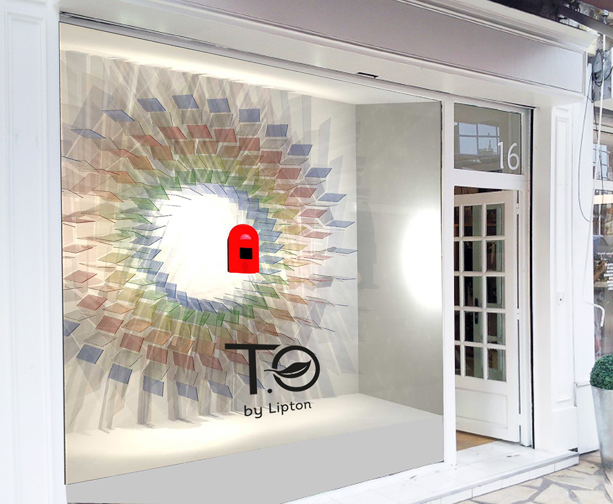
Vitrine pour la nouvelle machine T'O By Lipton
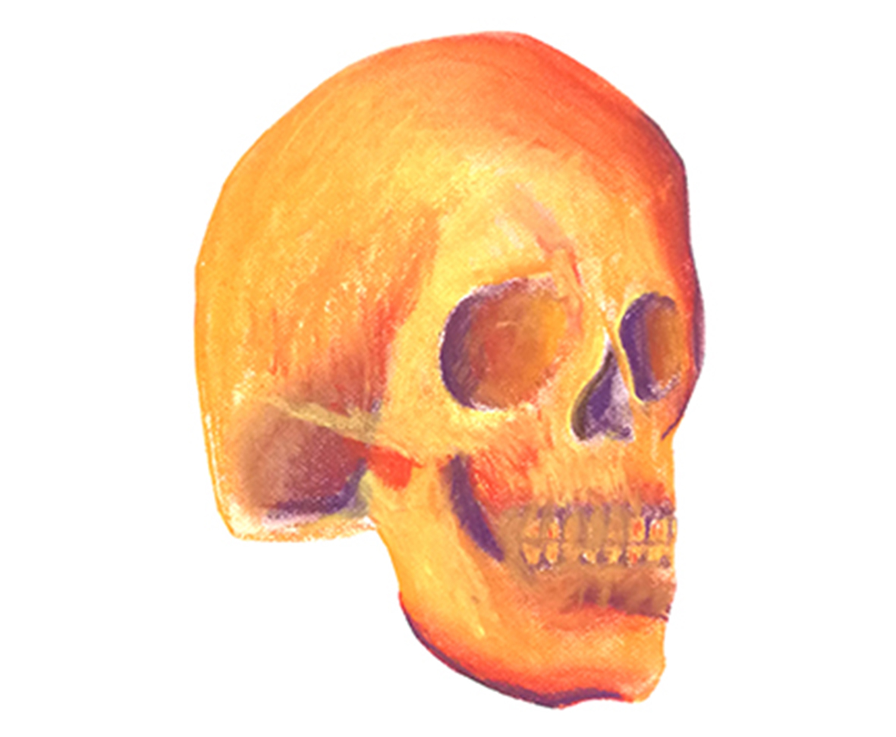
Réalisation de crânes aux pastels secs
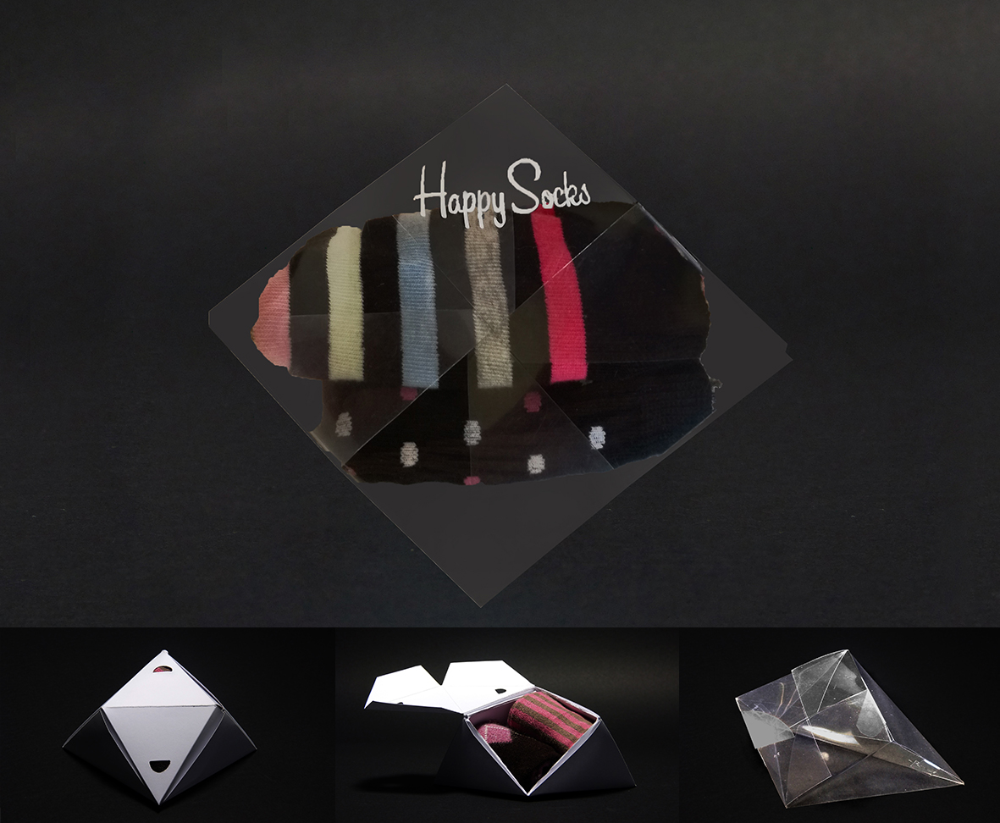
Réalisation d'un packaging pour la marque Happy Socks
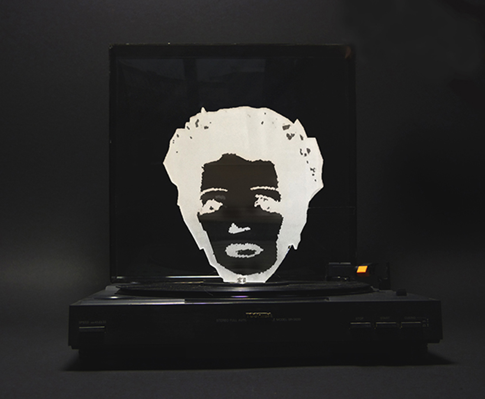
Modification d'un objet pour une exposition
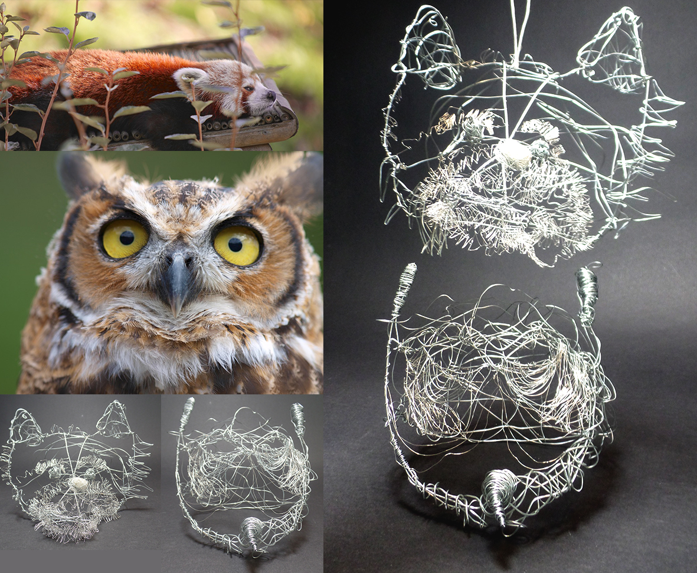
Représentation de mes animaux totems

Réalisation d'un stand pour le salon de l'étudiant
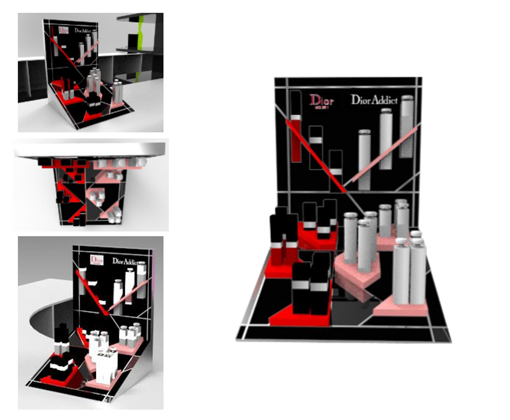
Réalisation d'une PLV pour le concours POPAI (2017)
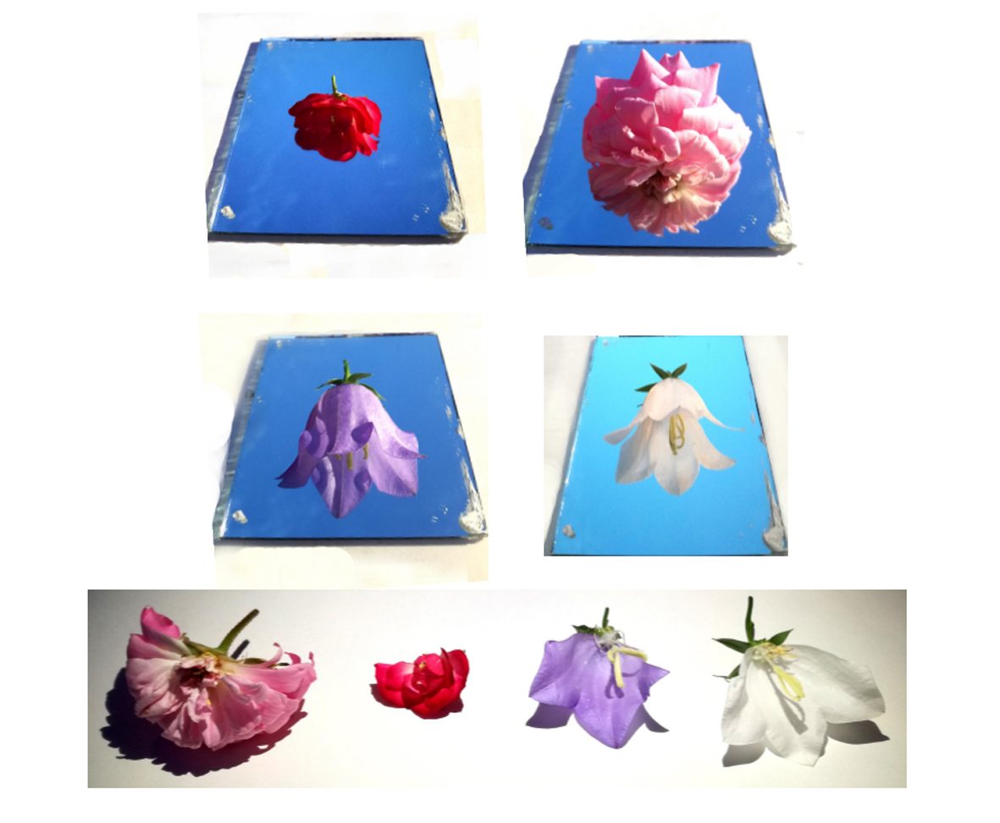
Projet Land Art en travaillant le reflet
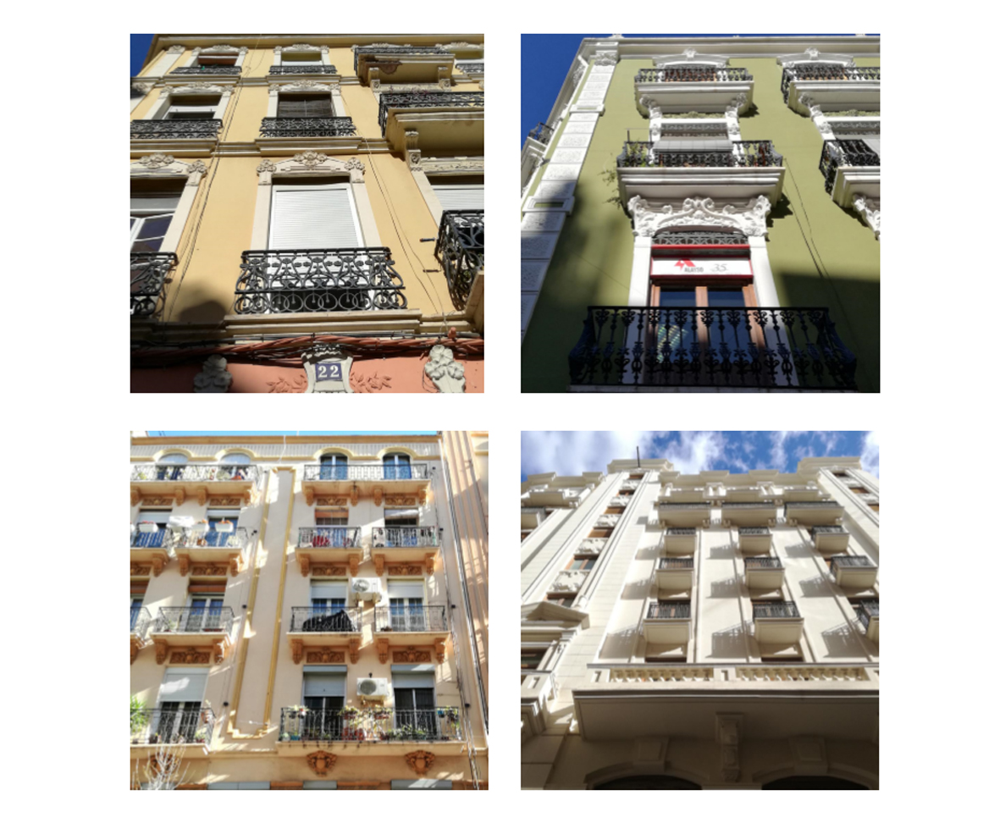
Série photo de balcons à Valence (2016)
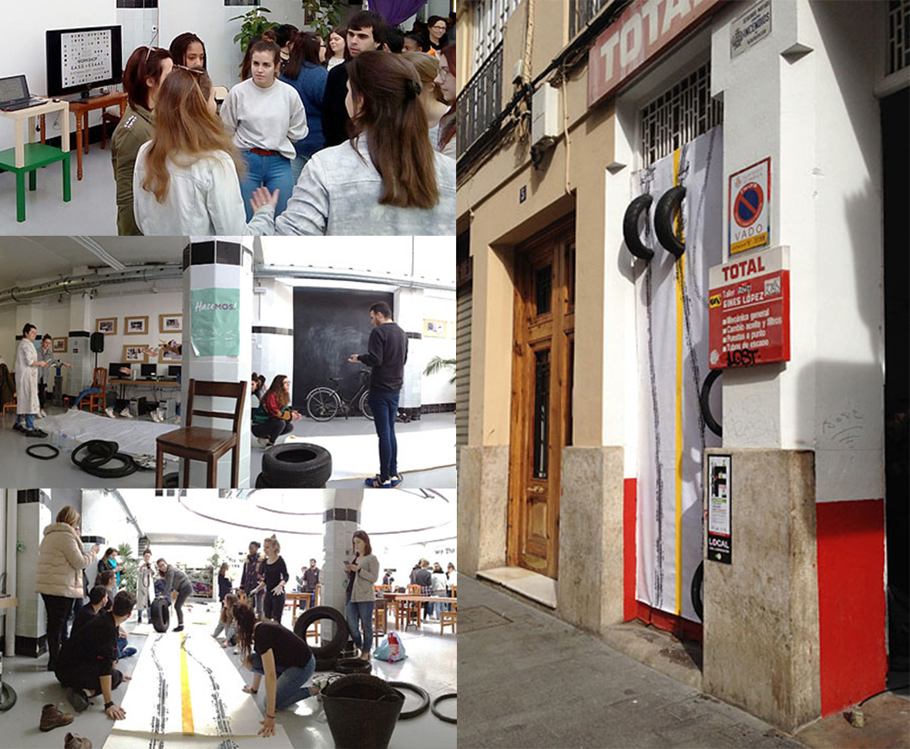
Workshop international à Valence en Espagne (2016)